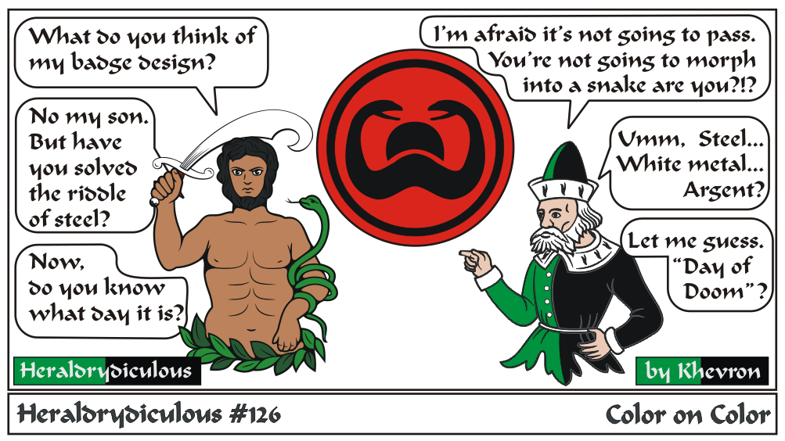

The use of black on red is possible but very rare, breaking the color on color rule, and each use must be documented, and most likely should have a compatible name/persona of the correct time period and culture.
Thulsa Doom's badge is too complicated - Gules, in pale a crescent pendant and a legless, wingless amphisbane regardant within an orle sable. (My guess)
The charge needs to be large and bold. One SCA registered example is "Gules, a bear passant sable." registered to a Germanic persona.
e-mail: 
Back to Khevron's Heraldry Page